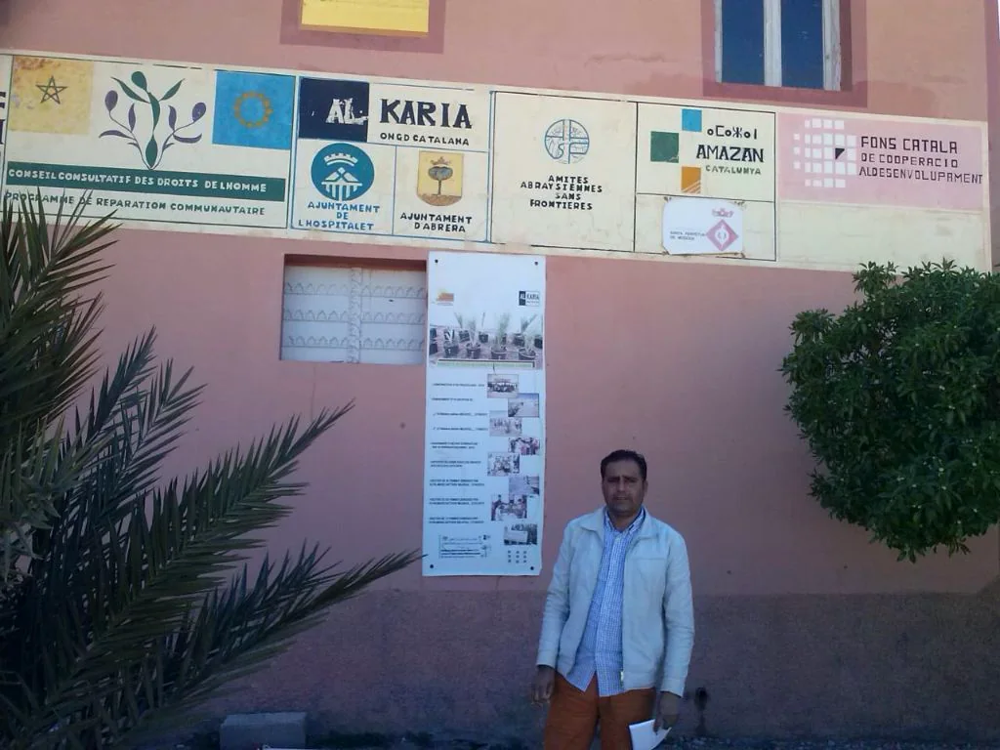
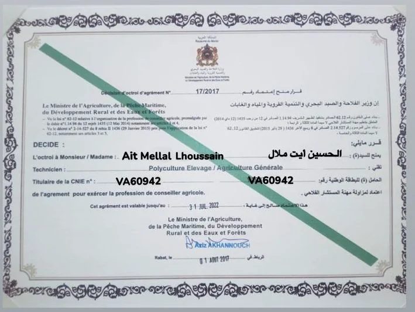
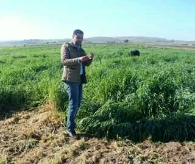

الاستشارة الفلاحية
قرارات في الزراعة والماشية والاستثمار مبنية على الواقع الميداني.
مواكبة تقنية للفلاحين والمستثمرين والتعاونيات ومربي الماشية عبر خبرة ميدانية في السقي وتدبير الزراعات والإنتاج الحيواني.
خبرة فلاحية احترافية لتنمية مشاريعكم الزراعية
Agrément N°17/2017
تتبع تقني ومواكبة ميدانية
الفلاحون والمستثمرون والتعاونيات والكسابة
الإنتاجية والاستدامة والربحية



يقدم AIT MELLAL LHOUSSAIN استشارة فلاحية عملية منطلقة من واقع الميدان. وتشمل الخدمات الإنتاج النباتي وأنظمة الري وتغذية النبات وحماية المزروعات وغرس البساتين وتدبير الماشية ومواكبة الاستثمار الفلاحي.
تقديم استشارة واضحة وعملية ومربحة تساعد الفاعلين الفلاحيين على اتخاذ قرارات أفضل في الميدان.
أن نصبح مرجعًا موثوقًا في الاستشارة الفلاحية الحديثة والمستدامة والمرتكزة على النتائج داخل المغرب.
قرارات في الزراعة والماشية والاستثمار مبنية على الواقع الميداني.
تخطيط عملي وتتبع وانضباط في الأداء.
استراتيجية موسمية وتوجيه في الغرس وتتبع للمحاصيل.
تدبير الأغنام والأبقار والماعز بتوصيات عملية.
تصميم وإشراف وتحسين أنظمة الري الموضعي.
برامج التسميد وتدبير خصوبة التربة.
توجيهات وقاية النبات واختيار الحماية المندمجة.
دراسات وتخطيط وهيكلة مشاريع مربحة.
وثائق منظمة للضيعات والبرامج والمستثمرين.
توجيه نحو فرص الدعم والملاءمة مع البرامج.
تشخيص ميداني وإشراف تقني مباشر.
نقل المعرفة التطبيقية للفرق والتعاونيات.
تخطيط الغرس والري والبنية الزراعية طويلة الأمد.
نجاعة استعمال الماء وانتظام المحصول داخل التصميم الحقلي.
توجيه عملي للتربية والتغذية والتنظيم.
مواكبة في الاختيار من أجل قرارات تقنية مسؤولة.
متابعة عملية من الانطلاق إلى الجني.
دليل واضح على ممارسة مهنية منظمة للاستشارة الفلاحية.
اعتماد رسمي وتموقع ميداني.
تواصل جاهز بالعربية والفرنسية والإنجليزية.
توصيات قابلة للتطبيق لا مجرد تنظير.
تصميم جاهز لنشر الشهادات الموثقة للعملاء.
نعم، الخدمات موجهة للضيعات العائلية والتعاونيات والكسابة ومشاريع الاستثمار.
نعم، خاصة في تصميم وإشراف وتحسين أنظمة الري بالتنقيط.
نعم، يمكن إدماج استشارات الأغنام والأبقار والماعز ضمن المواكبة التقنية.
نعم، تشمل الخدمات التفكير في الجدوى والتأطير التقني وتوجيه المشروع.
نعم، التشخيص الميداني والمتابعة العملية من صميم الخدمة.
العربية والفرنسية والإنجليزية لتواصل مناسب مع مختلف الفئات.
SEO-ready article structure with featured image, excerpt, categories and related posts.
SEO-ready article structure with featured image, excerpt, categories and related posts.
SEO-ready article structure with featured image, excerpt, categories and related posts.
SEO-ready article structure with featured image, excerpt, categories and related posts.
SEO-ready article structure with featured image, excerpt, categories and related posts.
SEO-ready article structure with featured image, excerpt, categories and related posts.
Phone: 0630727226
WhatsApp: 0641637051
Hours: الاثنين إلى السبت • 08:30–18:30